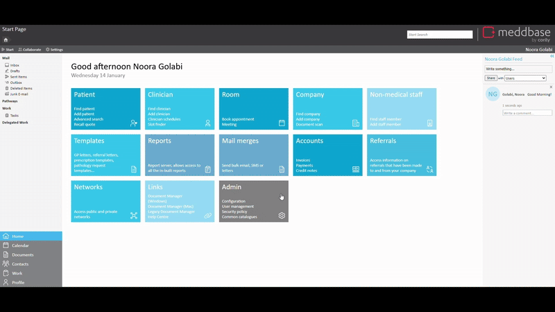

Meddbase System Administrators with access to the Admin section of the Start Page can view and modify a host of configuration options and settings controlling the behaviour and workflows in the application. Many of the above are configured/controlled via the Configuration section.
This article is a part of a collection of articles on the Admin > Configuration section. For an overview, see Admin > Configuration - Overview.
Access to the Admin section and the ability to add/change configuration and settings are determined by the User's Role Group membership and Security Policy permissions granted. For more information, see Understanding Role Groups - Definitions, related workflows and behaviours and Security Policy - Overview.
This article is an overview of the Admin > Configuration > Pathology section and the available settings within.
To access the Configuration section, a permitted user should do the following:
1. From the Start Page, navigate to Admin.
2. Click Configuration.
3. Click Pathology.

The below table explains each setting, field, and/or tick box in detail:
| Setting | Description/effect |
|---|---|
| Behaviour (For more information, see How to request and manage Pathology Results.) | |
Create pathology work item on request |
This checkbox controls whether a work item will be automatically created as soon as a pathology request as been made. |
| Enable awaiting printing state and restrict state changes |
This checkbox controls whether to prevent state changes that don't normally happen in practice, e.g. changing from "Awaiting Results" to "Reviewed" if no review notes are added. |
| Enable pathology result reviewed status |
This checkbox controls whether the Set status to reviewed button is added to the bottom of the review notes section of the lab results. Clicking this button allows you to change the current work item to the Reviewed status. When enabled, a work item must be in the Reviewed status to complete the results. The work item status can also be manually set to Reviewed from the results window. |
| Show ordered tests in Lab Results pane |
This checkbox controls whether the Requested tests list will be displayed at the top of the Lab Results page. |
| Record separate review notes for each ordered test |
This checkbox controls whether a separate Review Notes text box is generated for each test in the same request. |
| Define Critical Results | |
| Below low normal | The checkboxes in this section control the types of critical results to use in your chamber.
|
| Above high normal |
|
| Below lower panic limits |
|
| Above upper panic limits |
|
| Below absolute low - off instrument scale |
|
| Above absolute high - off instrument scale |
|
| Abnormal |
|
| Very abnormal | |
| Significant change up | |
| Significant change down | |
| Better | |
| Worse | |